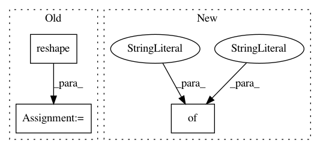

873a906cb76f0c6988d6547078103b67b73a7262,deslib/des/des_knn.py,DESKNN,estimate_competence,#DESKNN#Any#Any#,101
Before Change
The diversity estimated for each base classifier
_, idx_neighbors = self._get_region_competence(query)
idx_neighbors = idx_neighbors.reshape(1, -1)
hit_result = self.processed_dsel[idx_neighbors, :]
predicted_matrix = self.BKS_dsel[idx_neighbors, :]
// calculate the classifiers mean accuracy for all samples
competences = np.mean(hit_result, axis=1)
// competences = np.zeros(self.n_classifiers)
// predicted_matrix = np.zeros((self.k, self.n_classifiers))
// for clf_index in range(self.n_classifiers):
// hit_result = self.processed_dsel[idx_neighbors, clf_index]
After Change
diversity[sample_idx, clf_index] += this_diversity
diversity[sample_idx, clf_index2] += this_diversity
competences = {"accuracy" : accuracy, "diversity" : diversity}
return competences
def select(self, competences):
In pattern: SUPERPATTERN
Frequency: 3
Non-data size: 3
Instances
Project Name: scikit-learn-contrib/DESlib
Commit Name: 873a906cb76f0c6988d6547078103b67b73a7262
Time: 2018-04-02
Author: rafaelmenelau@gmail.com
File Name: deslib/des/des_knn.py
Class Name: DESKNN
Method Name: estimate_competence
Project Name: uber/pyro
Commit Name: cce694178ae66b3a84623d517ffdf0c1bb32ba27
Time: 2020-05-11
Author: fehiepsi@gmail.com
File Name: pyro/infer/mcmc/hmc.py
Class Name: HMC
Method Name: _sample_r
Project Name: asyml/texar
Commit Name: bb033219cbc78a5a0f934c1f0453fe7ace9934bc
Time: 2018-08-21
Author: zhitinghu@gmail.com
File Name: texar/modules/policies/policy_nets.py
Class Name: CategoricalPolicyNet
Method Name: _build